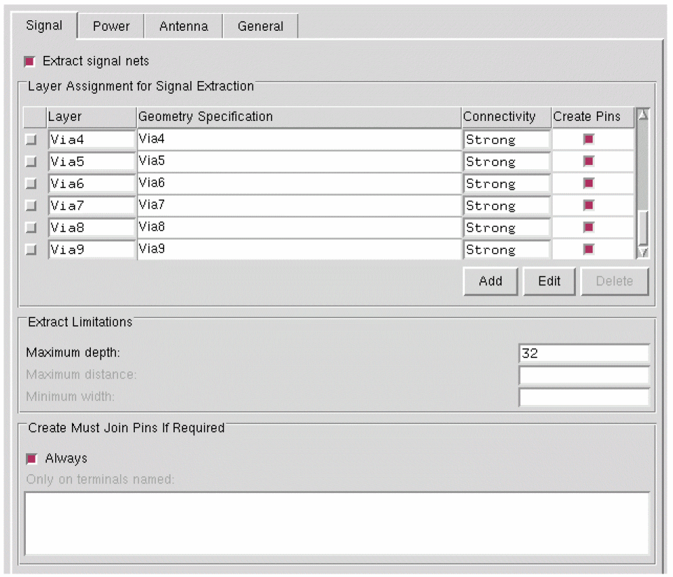
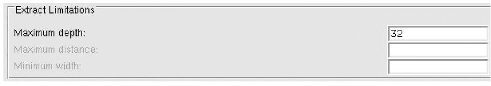
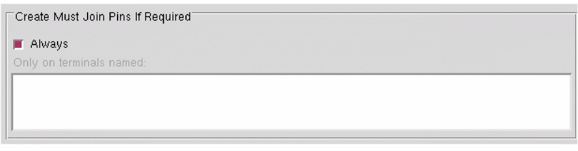

Specifying Layers and Geometries for Extraction
To extract geometries on signal or power nets or to calculate process antenna information, you need to provide information about them to Abstract Generator. The Extract step provides three different tab locations - Signal, Power, and Antenna - for you to provide these details.
-
Choose Flow – Extract. The Signal tab is the first tab in the Running step Extract form.
 -
Select the Extract signal nets option to direct Abstract Generator to run connectivity extraction for signal nets.
Selecting the Extract signal nets option activates the Layer Assignment for Signal Extraction table. - In the Layer Assignment for Signal Extraction table, specify the layers through which you want Abstract Generator to extract. You can also specify the geometry or shapes that should be present on a particular layer when signal net extraction is performed.
- In the Layer Assignment for Signal Extraction table, specify the Layer on which signal net extraction is to be performed, and set the Geometry Specification for the layers specified in this table.
- In the Connectivity column, you can specify the type of connectivity setting, Strong or Weak, for a particular layer. The connectivity setting is valid for a layer only if a geometry specification is provided for that layer.
- Use the Add, Edit, and Delete buttons and the G-Spec Builder Form in conjunction with the Operators to work with the Layer Assignment for Signal Extraction table.
-
Use the Maximum depth, Maximum distance, and Minimum width fields for specifying the extraction limits.
 -
In the Create Must Join Pins If Required section, you can control what happens when the extractor finds two disjoint groups of shapes extracted for the same net.
The Extract signal nets option should be selected in order to generate the must-join pins. If the Extract signal nets option isOFF, then the Create Must Join Pins If Required options do not have any effect. - Use the Always option and the Only on terminals named field to create LEF must-join relationships between disjoint geometries extracted from separate starting pins on the same net.
You can face the following issue while using the Running Step Extract form and the following error message might be displayed.
ABS-23005
Cell name: Terminal name has been ignored although it has the mustJoin attribute because it was not indicated in the Create Must Join Pins If Required section on the Signal page.
Troubleshooting: To ensure that must-join pins are created for terminals, select the Always option or include specific terminals in the Only on terminals named field.
Related Topics
Specifying General Options in G-Spec Builder Form
Relationship between Signal and Antenna Tabs
Must-Join and Must-Connect Relationships for Terminals
Return to top